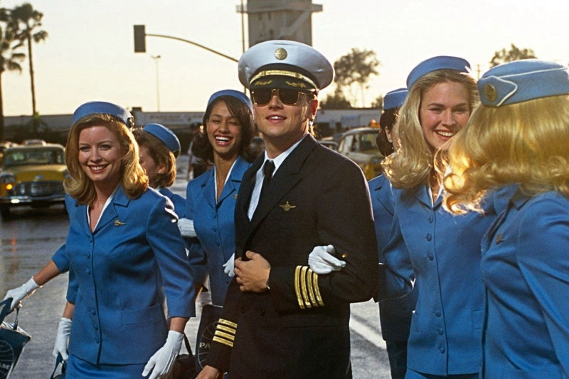
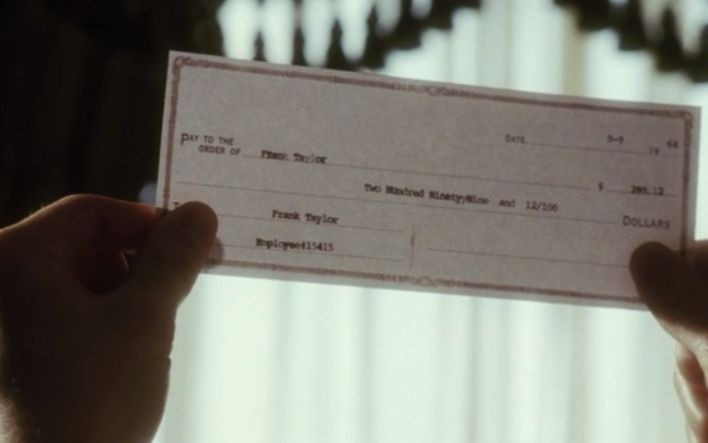

갈망하는
외침
내가
지키는 걸로
대해
묻다
동안에
우리는
여기 문제가
생겼다
해맑은
아이들
게이트에
사는 남자
베라
부모를
고소했어요
경찰과 도둑
게임
예술의
경계에서
모두가
이뤄낸 기적
캐치 미 이프 유 캔 (2002)스티븐 스필버그 감독 |
|

“거짓아, 진실을 잡아봐.”
2002년 A급 연기파 배우들과 가장 영리한 감독으로 전성기를 구가하던 스필버그의 만남인 캐치 미 이프 유 캔은 사기 전과자 프랭크 W.애버그네일 주니어의 동명의 자서전을 바탕으로 한 작품. 수표를 위조하고 다른 신분을 사칭한 애버그네일 의 유명한 이야기는 대중문화로 각색되어 전 세계 관객을 사로잡았다. 1960년대 중반부터 1970년대 초반까지 그는 사기꾼으로 팬 아메리칸 항공사의 조종사, 조지아의 의사, 루이지애나주 배턴루지의 법무장관실 변호사, 브리검 영 대학교의 교수 등을 사칭했다. 또한 26개국 이상에서 200만 달러 상당의 부도 수표를 현금화하기도 했다. 그는 이 모든 것이 10대 시절에 FBI의 추적을 받으면서 이루어졌다고 주장했다. |

“사기치지 않았어요. 2주동안 공부해서 합격했죠.” "Fake it till you make it."이라는 영어 관용구로도 존재하듯이 애버그네일은 자칫하면 모든 게 탄로가 날 수 있었던 상황 속에서 경험을 바탕으로 '아는 척'을 '척'이 아니게끔 태연하게 일관한다. |
|
||
|
“
크림통에 생쥐 두마리가 빠졌다. 한마리는 포기하여 바로 빠져죽고, 두번째 생쥐는 포기하지 않고 열심히 크림을 휘저어 버터를 만든뒤 빠져 나왔다.” |
||||